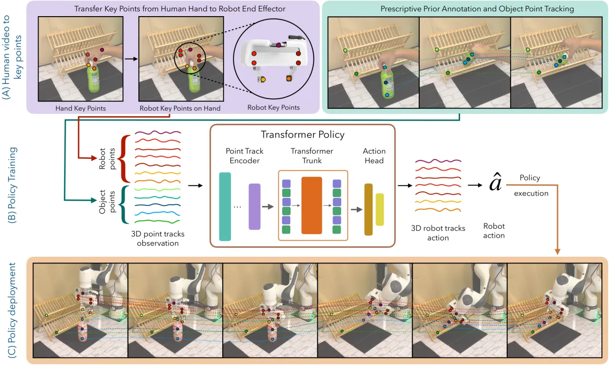
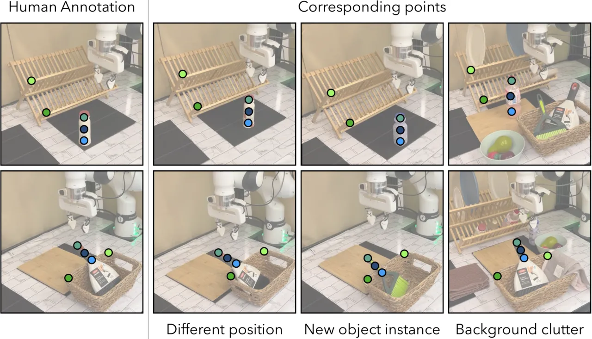
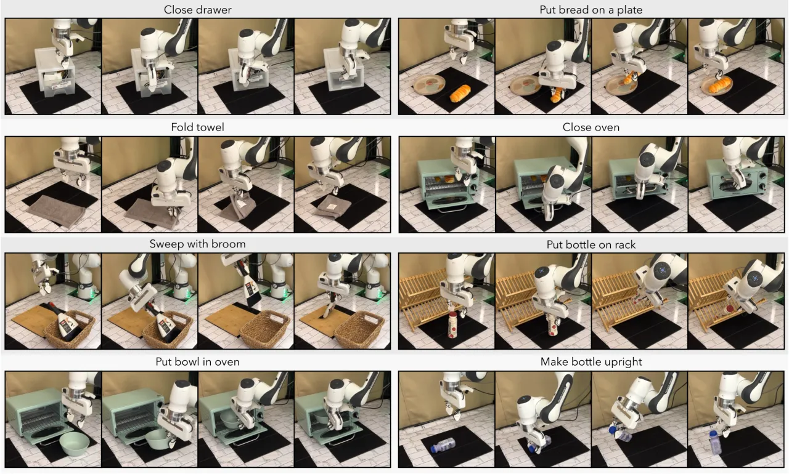
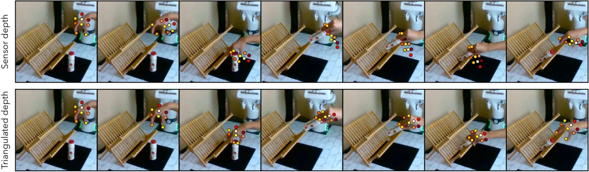

Point Policy 提出一种完全不使用遥操作数据、只从离线人类示范视频学习机器人操作策略的方法。它用现成视觉模型把人手位姿翻译成机器人位姿，用语义关键点（key points）刻画物体状态，得到一种与形态无关（morphology-agnostic）的稀疏表征。在 8 个真实任务上，相比此前最好方法取得 75% 的绝对成功率提升。
机器人学习的核心瓶颈是数据：与视觉、语言不同，机器人的每个数据点都必须在真实世界中物理执行一次，遥操作采集昂贵且难以规模化。因此亟需替代性数据来源以及能从这类数据中学习的框架。人类操作视频在互联网上海量存在，但人手与机器人夹爪的形态差异（embodiment gap）使其难以直接用于策略学习。
"we present Point Policy, a new method for learning robot policies exclusively from offline human demonstration videos and without any teleoperation data."
Point Policy 的核心思路是：把观测和动作都归约到一组3D 关键点上——物体状态用语义关键点表示，机器人（及人手）动作也表示为若干刚体关键点的运动轨迹。关键点这种稀疏、几何化的表征天然跨越了人手与机器人夹爪的形态鸿沟，使得不含机器人本体外观的人类视频也能直接驱动策略学习。
Point Policy 由三部分组成：(1) 把人手位姿翻译为机器人位姿；(2) 用语义关键点捕捉物体状态；(3) 用基于 Transformer 的策略 BAKU 预测未来的关键点轨迹并转回 6-DOF 动作。所有点都被三角化到 3D 世界坐标，这一步对性能至关重要。

每一帧用 MediaPipe 提取人手关键点，并从两个相机视角把 2D 坐标三角化为 3D 世界坐标。机器人的位置取为「食指指尖与拇指指尖的中点」（"the midpoint between the tips of the index finger and thumb"），朝向由初始手部位姿到当前手部位姿的刚体变换给出。夹爪状态则由指尖距离阈值判定——"a gripper is considered closed when the distance is less than 7cm, otherwise open."
物体状态由一组语义关键点表示。仅需在单帧上手动标注若干物体点，DIFT 就能把这些点通过语义对应传播到其他示范；随后 Co-Tracker 在整条轨迹上"automatically track these initialized key points throughout the entire trajectory"。这些物体关键点同样被三角化到 3D。

机器人关键点历史与物体关键点历史被展平、经 MLP 编码后作为独立 token 送入 Transformer（BAKU）。策略"predicts the future tracks for each robot point"并用确定性 action head 预测夹爪状态。预测出的关键点轨迹再通过刚体几何约束转回 6-DOF 位姿，以 6 Hz 执行。
在 8 个真实任务上评测：close drawer、put bread on plate、fold towel、close oven、sweep broom、put bottle on rack、put bowl in oven、make bottle upright，每个任务仅用 15–30 条人类示范并带空间变化。对比基线包括 BC (RGB)、BC (RGB-D)、Motion Track Policy (MT-π) 与 P3-PO。
| 设置 | 指标 | Point Policy | 对比 |
|---|---|---|---|
| In-domain（Table I） | 平均成功率 | 88% | 相比 MT-π +75% |
| 新物体实例（Table II） | 平均成功率 | 74% | 相比基线 +73% |
| 背景干扰物（Table III） | 成功率 | 稳定 / 仅轻微下降 | "only minimal degradation" |
In-domain 逐任务成功率：close drawer 10/10、put bread 19/20、fold towel 9/10、close oven 9/10、sweep broom 9/10、put bottle 26/30、put bowl 8/10、make bottle upright 16/20（平均 88%）。新物体泛化（6 个任务）平均 74%：put bread 18/20、fold towel 15/20、sweep broom 4/10、put bottle 27/30、put bowl 9/10、make bottle upright 9/20。

深度分析（Table V）表明三角化深度不可或缺：给 P3-PO 加上三角化后成功率"from 0% to 72%"；而从 Point Policy 中移除三角化深度则从"90% to 0%"直接崩溃。此外协同训练分析（Table IV）显示，仅用机器人数据训练的策略表现"poorly...compared to those trained exclusively on human data"——即仅用人类视频反而更强。

"Point Policy's reliance on existing vision models makes it susceptible to their failures." 例如遮挡下的手部位姿检测或点跟踪失败会直接损害性能；作者认为随视觉技术进步该框架会逐步增强。
"Point-based abstractions enhance generalization capabilities, but sacrifice valuable scene context information, which is crucial for navigating through cluttered or obstacle-rich environments." 在杂乱或多障碍环境中导航时缺失上下文；未来可研究在点抽象之外保留稀疏上下文线索。
"While all our experiments are from a fixed third-person camera view, a large portion of human task videos on the internet are from an egocentric view." 扩展到第一人称（egocentric）视角有望利用互联网上海量的人类视频资源。